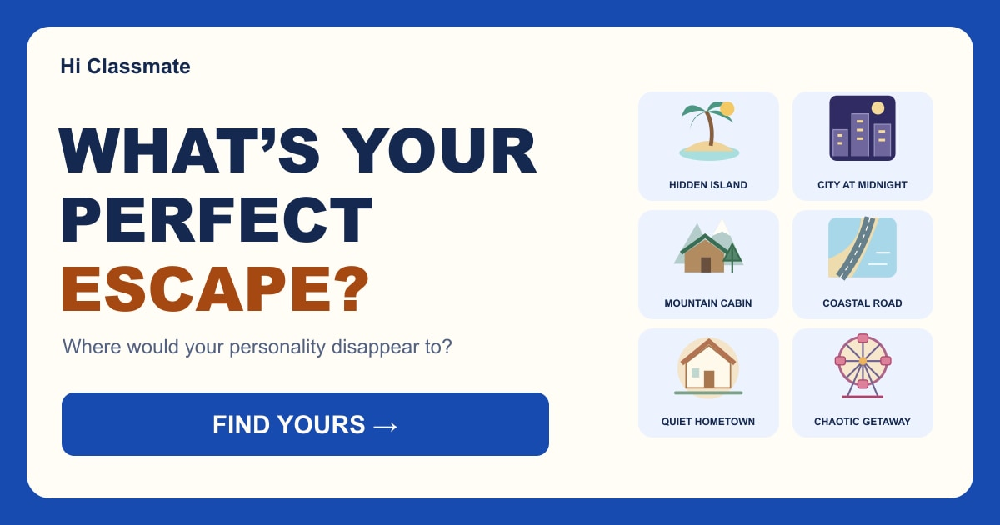

Where does your personality go when life gets too loud?
What’s Your Perfect Escape?
Three free days.
No responsibilities.
No one telling you what to do.
Where would you disappear to?
YOUR PERFECT ESCAPE IS...
Share or play again ↓Your Escape Style
Travel Chemistry

Another side of you?
About What’s Your Perfect Escape?
What’s Your Perfect Escape? is a travel and lifestyle personality quiz about the kind of break that feels most natural to you.
Instead of recommending a real destination, the game uses six imaginary travel styles to represent different ways people enjoy freedom, rest, discovery and time away from everyday routines.
The eight questions ask about spontaneous plans, changing itineraries, travel mornings, free time, new places and what you secretly want from a break. Your choices are combined to match you with the escape style that best fits your answers.
Possible results include The Hidden Island, The City at Midnight, The Mountain Cabin, The Coastal Road, The Quiet Hometown and The Chaotic Getaway.
How to Play
Read each of the eight travel situations and choose the response that feels closest to what you would naturally do.
There are no right or wrong answers.
Your choices contribute to different travel styles, and the overall pattern determines your Perfect Escape.
At the end, you can explore why that escape fits you, what you may actually want from a break, your travel strength, a possible travel trap and the kind of travel companion who may make the trip easier—or much more chaotic.
What Does Your Perfect Escape Mean?
Your result is a playful lifestyle profile, not a recommendation for a specific destination or a prediction about how you will behave on every trip.
Travel preferences can change depending on your mood, budget, companions and circumstances.
The six escape styles are simply a fun way to compare how different people imagine a break from everyday life.
Share the quiz with your friends and see whether you would actually enjoy traveling together—or whether one of you wants a quiet cabin while the other is already planning what to do after midnight.